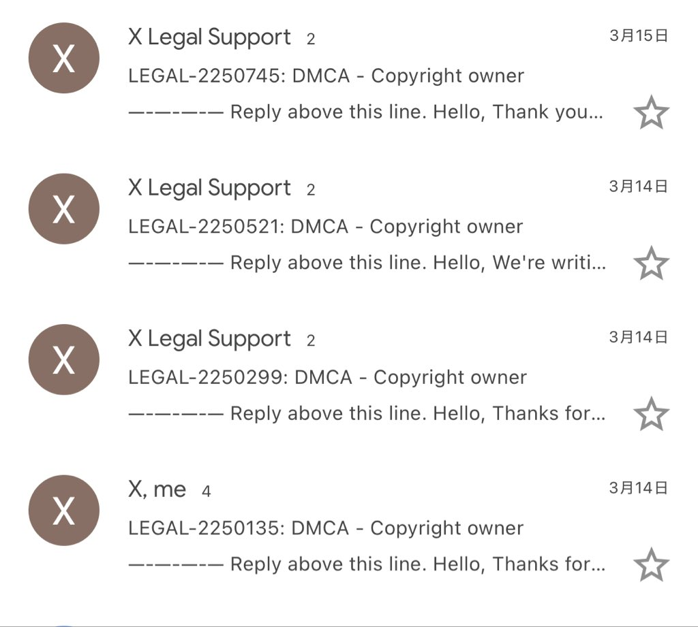

Aoi M
@aoim33
靠着偷别人的稿件洗稿起家的沤肥真就应该滚回他的乡下小渔村
一群搞传销的真觉得自己有多牛逼

小马
@Niubi0824172693
但tmd 这群三天两头就出个爆款，一开始来个三天破万粉的叫什么阿川
昨天又有个ai父亲写了个两百万的爆款文章也是直接破万粉
我是真嫉妒啊，不行我也要憋出几十篇长文轰炸他们
直接一个跟上大队伍 https://t.co/MltPCrmPue